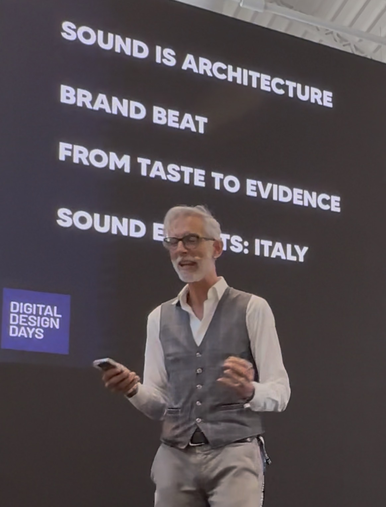

Profile & Positioning
Paolo Petrillo, Sound Architect & Strategic Consultant.
Focus: Sound Governance, Identity, Positioning.
Sound is not merely entertainment; it is an invisible infrastructure that bypasses rational filters and directly engages neurophysiology.
Sound Governance Framework
Diagnosis (Sonic Audit)
Assessing acoustic posture and risk exposure.
Assessing acoustic posture and risk exposure.
Infrastructure (Identity)
Codifying sonic DNA and brand consistency.
Codifying sonic DNA and brand consistency.
Governance
Orchestrating cross-channel sonic coherence.
Orchestrating cross-channel sonic coherence.
Field Experience
Television Interview
Touchpoint TV
Touchpoint TV
Industry Event
Milan Strategic Talk
Milan Strategic Talk


International Conference
Sound Governance Lecture
Sound Governance Lecture
Insights & Media
Contact
Initiate a strategic conversation to map acoustic potential and brand positioning.